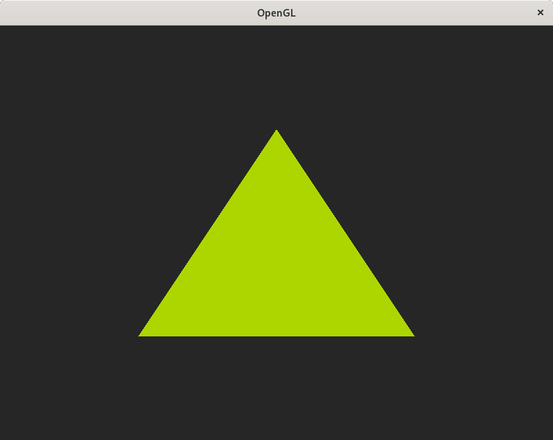

In the last post, we created a simple program to open an X11 window. Today, we will learn how to initialize and use OpenGL to clear the window with a color.

And the result: 
Linking with OpenGL
In order to use OpenGL we need to include the following headers:
#include <X11/Xutil.h> // Required to use XVisualInfo
#include <GL/gl.h> // OpenGL types and functions like GLuint or glClear
#include <GL/glx.h> // OpenGL X Window bindings like glXCreateContext
And we also need to tell the compiler to link with OpenGL:
# using pkg-config
gcc -o x11_opengl `pkg-config --libs x11 gl` x11_opengl.c
# on my system evaluates to:
gcc -o x11_opengl -lX11 -lGL x11_opengl.c
Creating an OpenGL context
Before creating an OpenGL context we need to select a visual by calling glXChooseVisual. This function accepts the connection to the display, a screen number and a list of desired attributes and returns the visual that matches best with the specified attributes.
In our case, we want to request a visual with support for TrueColor, double buffering and a 24-bit depth buffer.
XVisualInfo *visual = glXChooseVisual(display, 0, (int[]){
GLX_RGBA,
GLX_DEPTH_SIZE, 24,
GLX_DOUBLEBUFFER,
None
});
printf("Visual ID: %x\n", visual->visualid); // 2b4 in my environment
We can use the program glxinfo with the flag v glxinfo -v, to check what visuals are supported in our system.
106 GLX Visuals
Visual ID: 20 depth=24 class=TrueColor, type=window,pixmap,pbuffer
bufferSize=32 level=0 renderType=rgba doubleBuffer=1 stereo=0
rgba: redSize=8 greenSize=8 blueSize=8 alphaSize=8 float=N sRGB=N
auxBuffers=0 depthSize=24 stencilSize=8
accum: redSize=0 greenSize=0 blueSize=0 alphaSize=0
multiSample=0 multiSampleBuffers=0
visualCaveat=None
Opaque.
...
Visual ID: 2b4 depth=24 class=TrueColor, type=window,pixmap,pbuffer
bufferSize=24 level=0 renderType=rgba doubleBuffer=1 stereo=0
rgba: redSize=8 greenSize=8 blueSize=8 alphaSize=0 float=N sRGB=N
auxBuffers=0 depthSize=24 stencilSize=8
accum: redSize=0 greenSize=0 blueSize=0 alphaSize=0
multiSample=0 multiSampleBuffers=0
visualCaveat=None
Opaque.
...
With the visual selected, we can create the GL context by calling glXCreateContext.
GLXContext gl_context = glXCreateContext(display, visual, 0, True);
Once we have a valid GL context and we’ve also created an X11 window, we can bind them so that OpenGL will render to the window, from this point onward. This is achieved by calling glXMakeCurrent.
glXMakeCurrent(display, window, gl_context);
Using OpenGL
After creating and setting the GL context, we can start making OpenGL calls. We can clear the window background to a dark gray color by calling glClearColor inside our main loop, specifying the red, green, blue and alpha components ranging from 0.0 to 1.0. Followed by a call to glClear specifying that we want to clear the color buffer.
Finally, since we are using double-buffering we need to call glXSwapBuffers in order to swap the front and back buffers.
while (!quit) {
...
glClearColor(0.15, 0.15, 0.15, 1.0);
glClear(GL_COLOR_BUFFER_BIT);
// render code goes here
glXSwapBuffers(display, window);
}
Legacy OpenGL (fixed function pipeline)
Starting from OpenGL 2.0, shaders were introduced, and from OpenGL 3 onwards many features were marked as deprecated, effectively dividing OpenGL in 2 so called “profiles”. The OpenGL core profile, with all the deprecated functionality removed, and the OpenGL compatibility profile, keeping the deprecated features.
We will be using the fixed function pipeline or “Legacy” OpenGL here, but we might explore a more modern approach in a future post.
Drawing a triangle
In order to draw a triangle, we can specify the vertices inside a block starting with glBegin and ending with glEnd. The color of the triangle can be specified via one of the variants of glColor, which applies to all the vertices that follow, and vertex positions via glVertex. These coordinates go from (-1.0, -1.0) on the lower left to (1.0, 1.0) on the top right.
glBegin(GL_TRIANGLES);
glColor3f(0.68, 0.84, 0.0);
glVertex2f(-0.5, -0.5);
glVertex2f( 0.5, -0.5);
glVertex2f( 0.0, 0.5);
glEnd();
Cleanup
Finally, when all the rendering is done, and the application is shutting down, it is good practice to destroy the GL context via glXDestroyContext.
glXDestroyContext(display, gl_context);